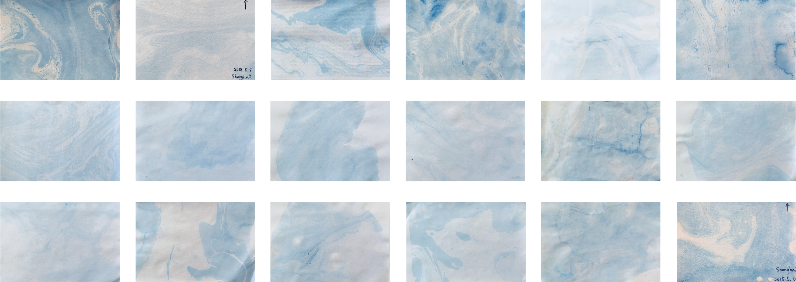
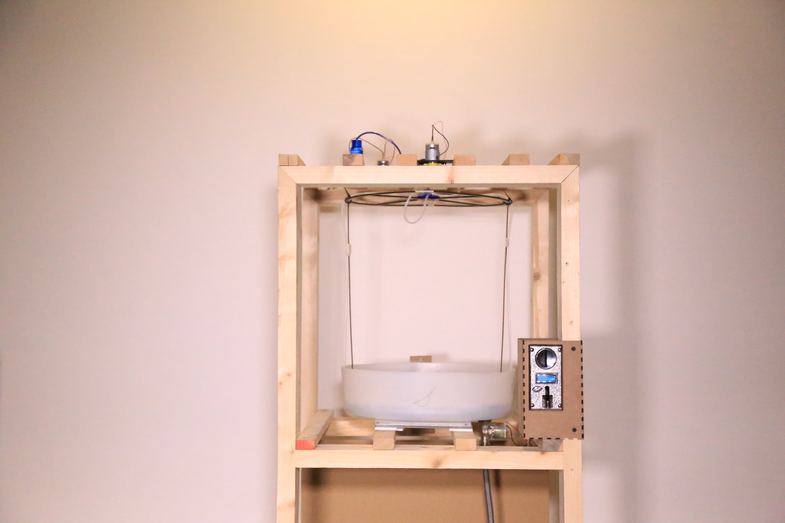
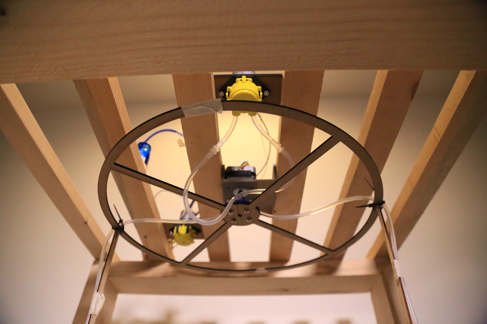
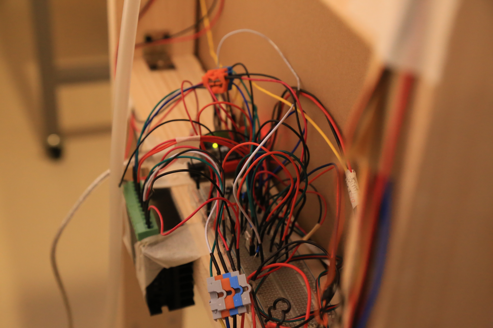
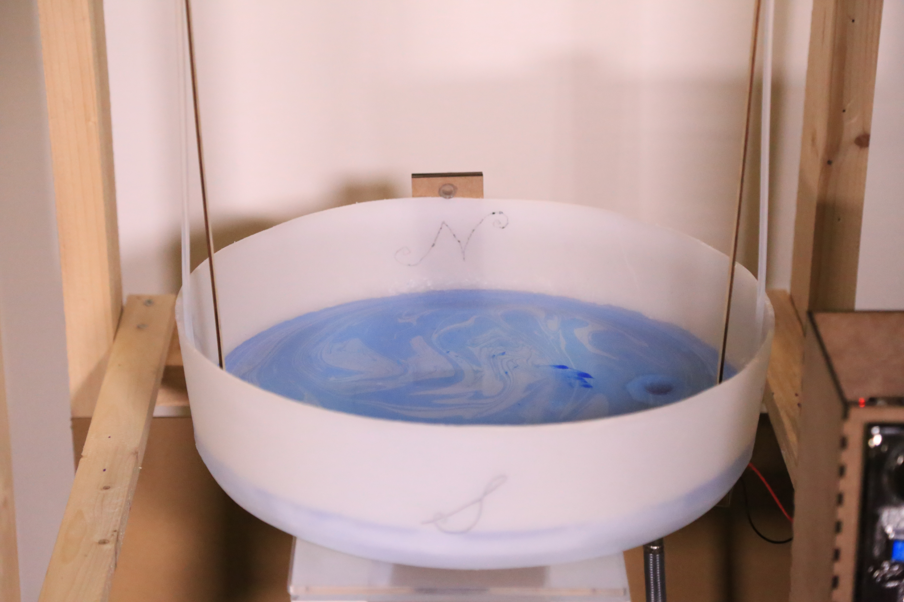
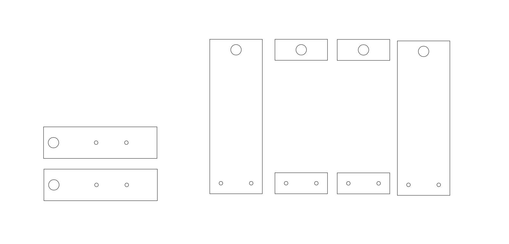
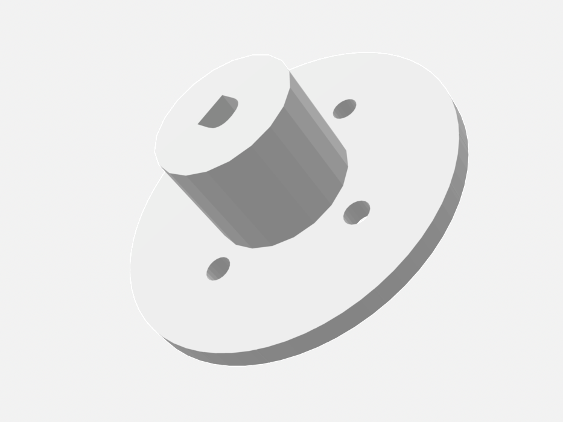
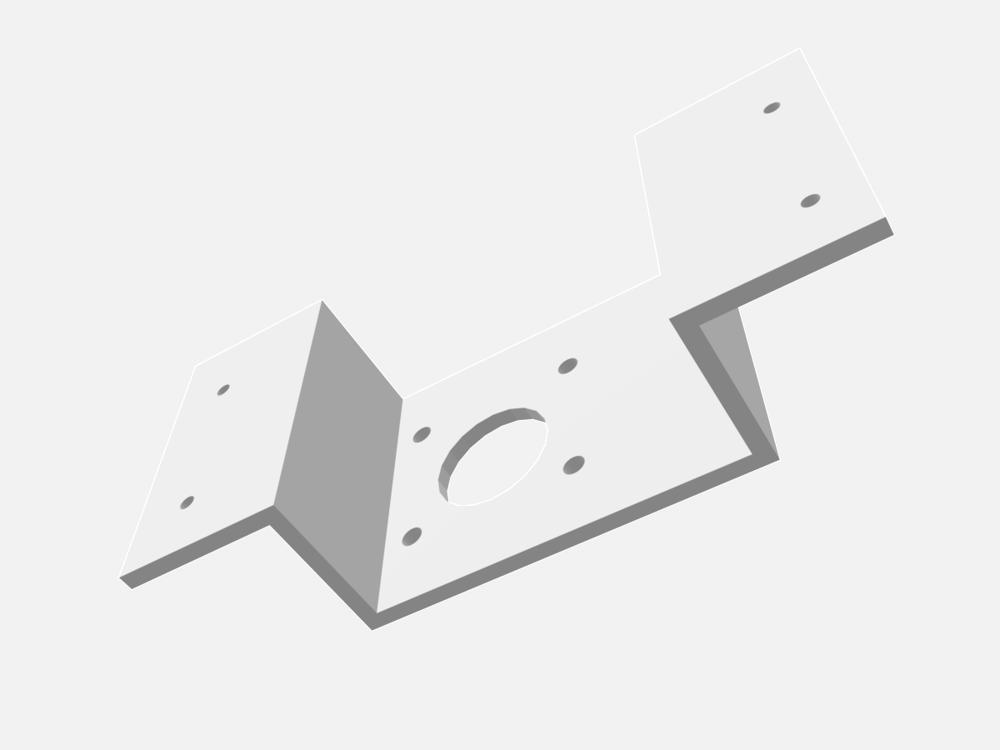

IMA Capstone Project, Shanghai
May 13th, 2018
With the rapid development of our society, we spend more and more time inside the concrete forest, separated from the nature. This alters the way we perceive natural phenomenon, like wind. We used to feel the wind and hear the wind all the time, but now we usually stand in front of those floor-to-ceiling windows, look at trees swaying or flags waving and then realize it is windy outside. Visual perception becomes the main way to know wind for people live in cities.
Winding Machine is a real-time wind visualization installation utilizing water and paint, in the form of a vending machine. The installation uses water to represent the atmosphere and paint to make the flow visible. Audience can save the representation of wind by marbling.
Here, you can take a look of the wind collected by audience from the IMA Spring show.

The whole installation was designed and made by myself with help from our lovely professors, teaching assistants and classmates.







< prev
Home
next >